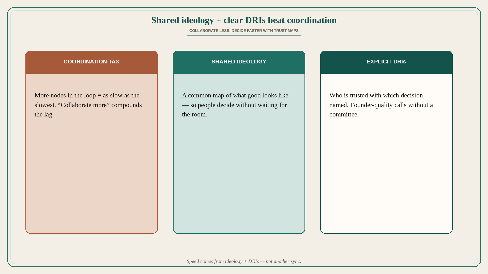

Shared ideology + clear DRIs beat coordination
Source: Lenny Rachitsky / Peter Sellis (@lennysan)
original post
What it claims
Design product teams around a shared ideology and an explicit map of who is trusted with which decision. You will almost never hear a leader tell their team to collaborate less — but coordination makes you as slow as the slowest node, and that lag compounds. The antidote is a strong shared ideology plus clear DRIs who can make confident, founder-quality decisions quickly.
Why it matters for a PO
POs inherit “more alignment” as the default fix: more syncs, more RACI sheets, more stakeholders in the room. Speed dies in the slowest node. If the team does not share what good looks like, every decision waits for a meeting. If DRIs are fuzzy, every decision waits for consensus. Ideology + named decision rights is how you get founder pace without heroic hours.
3 takeaways
- “Collaborate more” is often a tax — name which decisions should not require a room.
- Write the shared ideology as 5–7 beliefs the team uses to decide without you.
- Publish an explicit DRI map: decision type → trusted owner → escalate only when…
Practice this week
Pick the three decision types that most often stall (scope cut, priority flip, design trade-off). For each, name one DRI and one sentence of ideology that should let them decide alone. Share the map with the team and cancel one recurring sync that existed only because those DRIs were unclear.